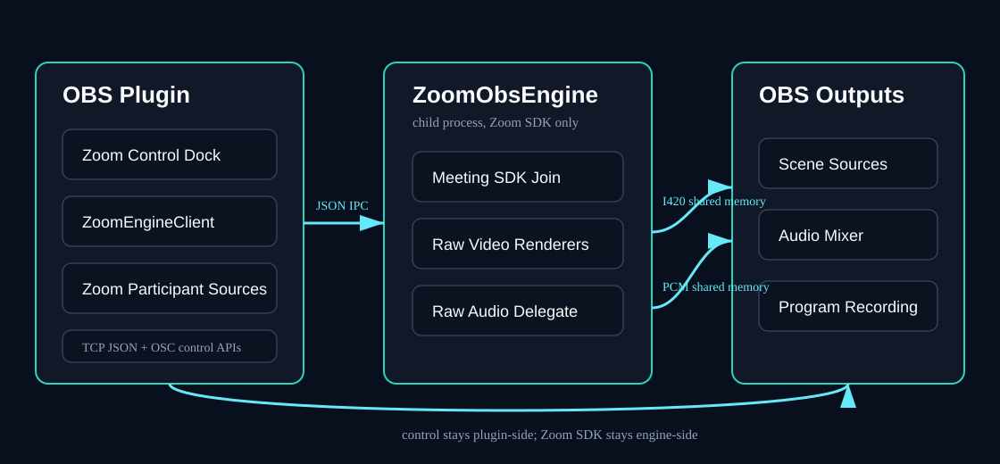
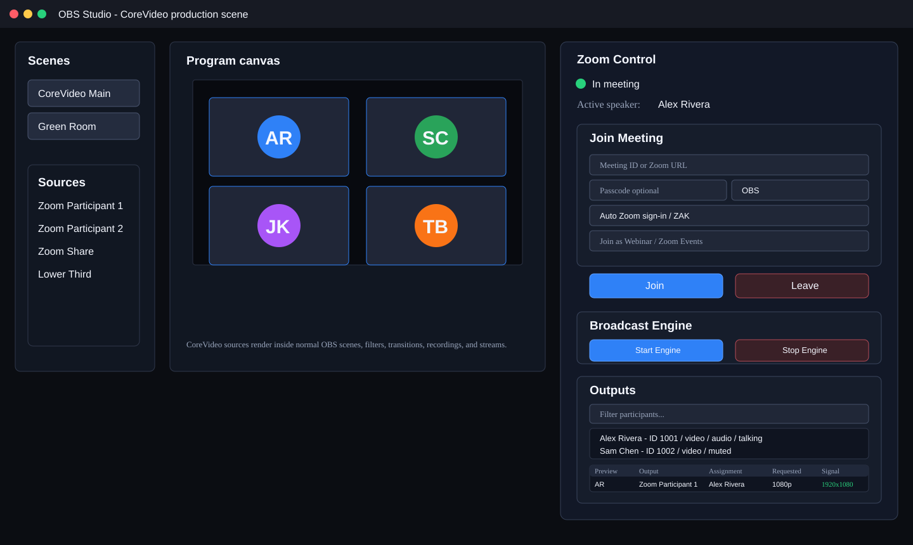
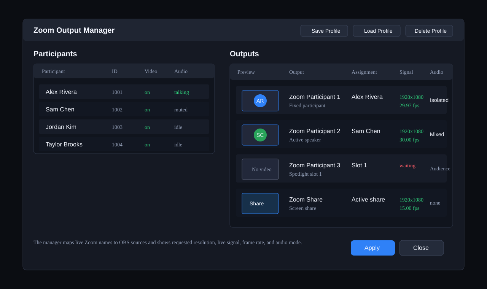
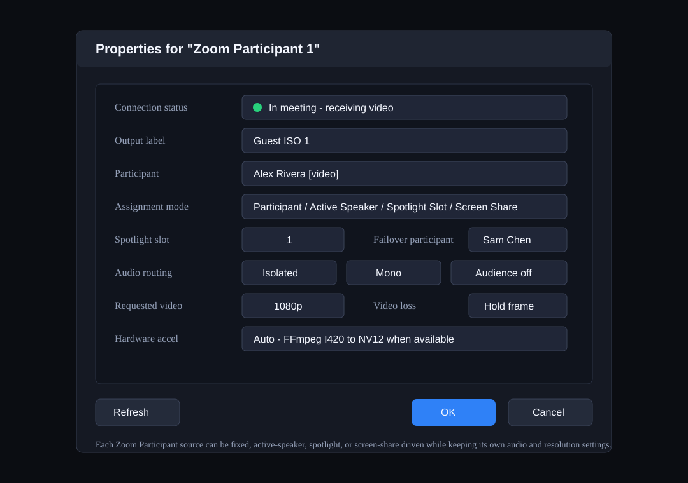
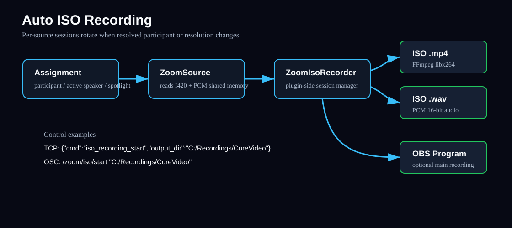

Core Plugin Functionality
This guide covers the main CoreVideo OBS plugin workflows. It intentionally focuses on the OBS plugin, ZoomObsEngine, Zoom source assignment, control APIs, audio routing, and ISO recording.
Media Architecture

CoreVideo keeps all Zoom Meeting SDK access inside the lightweight ZoomObsEngine helper process. The OBS plugin starts the engine, joins the meeting, and sends subscription requests over JSON IPC. Video and audio payloads move through named shared memory so large frames are not copied through the IPC pipe.
The plugin-side ZoomSource reads the shared memory frame, outputs it into OBS, and forwards the same copied buffer to optional plugin-side services such as ISO recording. This keeps the engine minimal and makes OBS/plugin features easier to test independently from the Zoom SDK.
Current limitation (high feed counts): All video frames travel as CPU I420 through shared memory. At 8+ concurrent 1080p sources this creates substantial memory bandwidth pressure due to multiple per-subscription copies. See ROADMAP.md (Large-meeting capacity guidance) for exploration of GPU texture sharing (Spout on Windows, Syphon on macOS) as a lower-CPU alternative transport in the future.
What It Looks Like in OBS
The CoreVideo plugin is operated from inside OBS. These diagrams mirror the current core plugin controls: the Zoom Control dock, regular OBS scenes/sources, the Active Speaker Director controls, the dockable profile-oriented Zoom Output Manager, and the Zoom Participant source properties. Exact styling can vary by OBS theme and platform, but the controls and labels should match the current plugin. This guide intentionally describes the OBS plugin path; optional Sidecar control-surface features are tracked separately in the roadmap.

The Zoom Control dock joins and leaves meetings, starts and stops raw media, shows meeting state, lists participants, exposes Active Speaker Director controls, and opens the Output Manager for source assignment without leaving OBS.

The dedicated Zoom Output Manager is the primary assignment surface. It supports profile save/load workflows and exposes requested resolution, observed signal, frame rate, assignment mode, screen-share/spotlight roster markers, and audio routing information for each output. The assignment menu exposes fixed participants, active speaker, screen share, and Spotlight 1-8 so an eight-feed show can be routed without opening individual source properties. Active-speaker, spotlight, and screen-share routing gaps are reported as specific health states, so operators can tell the difference between "waiting for the next directed speaker" and a stale or missing video feed. In v0.1.18 it is a persistent OBS dock, so operators can keep assignments, live previews, and feed health visible while working in normal OBS scenes. Profile loading reports matched outputs and any saved source names that are not present in the current OBS scene/source set before the operator clicks Apply.
Open the Zoom Diagnostics dock, or use Tools > Zoom Diagnostics to focus it, during a live session to see requested versus observed resolution, FPS, frame age, stale and quality retry counters, and the latest ZoomObsEngine debug events. This is the fastest way to see whether a source is waiting for frames, receiving a lower-than-requested feed, or being resubscribed by recovery logic. Use Create Support Bundle from this dock to write a redacted troubleshooting bundle with engine status, output health, recent debug events, plugin settings with tokens removed, ISO recorder and FFmpeg encoder/session status, runtime/package validation, and the latest OBS log when available. On Windows, CoreVideo also creates a .zip next to the support bundle folder when PowerShell is available. OBS log data is written as a recent redacted excerpt; OAuth codes, access tokens, refresh tokens, ZAK/JWT values, passcodes, client secrets, and authorization headers are removed before the bundle is written.

Each Zoom Participant source can be configured independently for fixed participants, active speaker, spotlight slot, screen share, isolated audio, audience audio, resolution, video-loss behavior, and hardware conversion.
Joining Meetings
- Open OBS.
- Open Tools > Zoom Control.
- Enter a Zoom meeting ID or full Zoom join URL.
- Enter a display name.
- Use Auto Zoom sign-in for the published broker-backed flow.
- Click Join.
- Use the visible Zoom Meeting SDK window for waiting-room admission, self video/audio, and normal meeting controls.
- Click Start Engine after joining to request raw media from Zoom.
For external-account meetings, configure OAuth in Tools > Zoom Plugin Settings. Published builds use the embedded CoreVideo broker URL: the browser sign-in uses Zoom Public Client OAuth + PKCE, CoreVideo fetches the signed-in user's ZAK, and the helper authenticates the Meeting SDK with the embedded Marketplace Public Client ID as AuthContext.publicAppKey. End users do not enter client IDs or secrets.
Source Assignment
Add one or more Zoom Participant sources in OBS. Each source can follow a different assignment mode:
| Mode | Behavior | Common Use |
|---|---|---|
| Participant | Fixed Zoom participant ID | Dedicated guest ISO |
| Active Speaker | Follows the current active speaker | Host/speaker-follow shot |
| Spotlight Slot | Follows Zoom spotlight position 1-8 | ZoomISO-style production |
| Screen Share | Follows active screen share | Slides/demo capture |
Each output reports observed resolution and frame rate through the output manager and TCP list_outputs command.
Screen Share Workflow
To capture slides, demos, or a shared desktop, add a CoreVideo Screen Share source or set any CoreVideo Participant source to Assignment > Active screen share. The source follows Zoom's active share feed and shows a placeholder when no participant is sharing.
The Zoom Output Manager assignment menu also includes Screen share. When a share is active, the menu label includes the sharing participant name. The TCP list_outputs response for screen-share outputs includes:
{
"assignment_mode": "screen_share",
"screen_share_available": true,
"screen_share_participant_id": 123456,
"screen_share_participant_name": "Alex Rivera",
"observed_width": 1920,
"observed_height": 1080,
"observed_fps": 30.0
}OSC parity is available for hardware panels and show-control systems: /zoom/status replies with /zoom/status/screen_share ,is, subscribers receive /zoom/event/screen_share ,is when the active sharer changes, and /zoom/list_participants emits /zoom/participant/detail packets with the is_sharing_screen flag plus host, co-host, raised-hand, and spotlight state.
For a single directed speaker-follow output, add the dedicated CoreVideo Active Speaker OBS source. It follows the central Active Speaker Director and uses a two-slot handoff internally: the current participant remains visible while the next participant warms on a hidden slot, then the source cuts only after a valid frame is available.
CoreVideo Tiles
CoreVideo Tiles is one OBS source that draws every participant as a gallery wall. Where a participant source is one person, Tiles is the whole grid: it picks the layout for the number of people on screen, and repaints itself as people join and leave. Add it from Sources -> Add -> CoreVideo Tiles.
Every tile is filled, never letterboxed. A tile narrower than the camera feeding it crops the sides rather than adding bars, which is what keeps a wall of mixed cameras looking even.
Filling the wall
| Control | Does |
|---|---|
| Fill mode | Auto - everyone with video fills the wall with whoever currently has video, in roster order. Manual - choose per tile gives you a Tile 1..N dropdown per position, so you place people yourself. |
| Maximum tiles | Upper bound on how many tiles Auto mode will draw. |
| Never show | Participants Auto mode skips — the stage camera, a recording bot, anyone who should never land on the wall. |
| Refresh participant list | Re-reads the roster if someone joined while the properties dialog was open. |
Shape and spacing
| Control | Default | Does |
|---|---|---|
| Tile shape | 16:9 (widescreen) | Shape of every tile: 16:9, 4:3, 5:4, 1:1 (square), 3:4 (portrait), 9:16 (vertical), or Custom ratio. |
| Custom ratio (width / height) | 16:9 | Used only when Tile shape is Custom ratio. |
| Gap between tiles (% of canvas height) | 0.741% | Space between tiles. A percentage of canvas height, so spacing scales with the canvas — 0.741% is the 8 px at 1080p the wall has always used. |
| Margin around the wall (% of canvas height) | 0.741% | Space between the wall and the canvas edge. |
Background
Background colour fills the gutters, the margin, and any canvas the wall does not cover. Background source draws any video-producing OBS source — an Image, a Media Source, a Browser Source — behind the tiles and over that colour; leave it on - none - for colour only. A background source that is deleted, or one that would render itself (the wall, or a scene containing it), falls back to the colour rather than breaking the wall.
Borders and glow
| Control | Default | Does |
|---|---|---|
| Border width | 0 (off) | Border drawn inside each tile's edge. |
| Border colour | black | |
| Corner shape | Square | Square or Rounded. |
| Corner radius | 16 | Shown only when Corner shape is Rounded. |
| Glow size | 0 (off) | Outer glow drawn around each tile, in a pass behind the tiles. |
| Glow colour | white | |
| Glow intensity (%) | 100 | |
| Glow softness (%) | 0 | How gradually the glow falls off. |
Border width and corner radius are clamped against the tile they are drawn on — past half the shorter side there is no interior left — so an extreme value degrades gracefully instead of inverting the tile.
Animating layout changes
| Control | Default | Does |
|---|---|---|
| Animate layout changes | off | Eases the whole wall when the layout changes, instead of jumping on one frame. |
| Animation duration (ms) | 350 | How long the wall takes to settle. 100–1000. |
With it off, the wall behaves exactly as it always has and the animator never runs — this is not a cosmetic setting, it is a different render path.
With it on, a join or a departure re-solves the grid and every tile eases to its new position and size. A departure is not one tile vanishing: five people becoming four turns a 3x2 grid into a 2x2, so every remaining tile moves and resizes regardless, and animating only the tile that changed would leave the most visible part of the change as a hard cut.
Three behaviors worth knowing before you put it on air:
- A newcomer fades in at its final slot rather than flying in from an edge, so tiles never travel across one another to reach their positions.
- A departure reflows immediately — the leaving tile is not held on screen.
- A roster blip reflows the wall out and back. Someone dropping and rejoining within a moment produces a wobble rather than a pop. This is the deliberate trade for the wall never being behind reality.
A tile that is not moving draws through the same even-snapped path it always has, byte for byte. Only a tile actually in motion takes the sub-pixel path, and it returns to the pixel-exact one as soon as it settles.
Per-tile crop
Per-tile crop gives each tile its own crop left % and crop right %, for trimming a participant who is sitting off-centre without touching the others.
Per-participant audio
The wall itself carries no audio. Participant audio scene or group names a scene or group in which the wall creates one Zoom participant audio source per tile, so every person on the wall gets their own fader and their own ISO track. Leave it blank and nothing is created.
Points worth knowing before you switch it on:
- Add that scene or group to every scene. Audio then stays put while you cut between scenes, instead of appearing and disappearing with the wall.
- A nested scene is safer than a group. A group can be dissolved with Ungroup, which scatters the sources inside it.
- Use the audio group on one Tiles source only. If you run a second wall — a panel wall beside a main one — leave its audio field blank. Audio for each person belongs to whichever wall created it, so on a second wall someone who drops off that wall can be left muted while still on screen on the other one, and both walls number their ISO stems from track 2 up, which can put two people on the same stem in the recording. The plugin logs a warning if it sees a second wall with a group set.
Active Speaker Director
The Active Speaker Director is controlled from the Zoom Control dock. It is not just a pass-through of Zoom's raw active-speaker event; it builds CoreVideo's own production decision from the raw speaker signal.
The dock shows:
- Directed speaker: the participant currently being sent to active-speaker outputs.
- Raw speaker: the latest speaker reported by Zoom.
- Candidate speaker: the participant waiting out the sensitivity timer.
- Last speaker: the previously directed participant.
- Status line: whether the director is waiting, holding, evaluating a candidate, or locked by manual supersede.
- Manual take/release: an operator supersede that holds a participant on air until released.
Timing controls:
| Setting | Default | Behavior |
|---|---|---|
| Sensitivity | 500 ms | Candidate must keep speaking this long before switching. |
| Hold | 2000 ms | Minimum time to stay on the current directed speaker after a cut. |
TCP examples:
{"cmd":"speaker_director_status"}The response includes the legacy numeric IDs plus resolved participant objects for directed_speaker, raw_speaker, candidate_speaker, last_speaker, manual_speaker, excluded_participants, and a status value such as holding, candidate_pending, manual_supersede, or waiting_for_speaker. Subscribed TCP clients also receive speaker_director_changed events when the directed, candidate, or manual speaker changes.
{"cmd":"speaker_director_configure","sensitivity_ms":650,"hold_ms":2500}{"cmd":"speaker_director_take","participant_id":123456}{"cmd":"speaker_director_release"}Audio Routing
CoreVideo supports three audio modes for participant outputs:
| Routing | Behavior |
|---|---|
| Mixed | Full meeting mix |
| Isolated | Only the assigned participant's one-way audio |
| Audience | Residual one-way audio for participants not assigned to isolated outputs |
Use Isolated when you need the assigned participant only. Use Audience for a remaining-room or overflow mic channel after dedicated isolated sources have claimed named participants.
Auto ISO Recording

ISO recording is controlled by the OBS plugin, not the engine. When enabled, CoreVideo records one video file and one PCM WAV audio file per active source segment. A new segment starts when the resolved participant or source resolution changes.
Requirements:
ffmpegmust be available onPATH, or pass an explicitffmpeg_path.- Raw media must be active.
- Sources must be assigned to participant, active speaker, or spotlight modes.
OBS ISO Recorder Panel
Open Tools > Zoom ISO Recorder to manage ISO recording from a separate OBS dock. The panel provides:
- Output folder picker.
- FFmpeg executable field with a test button.
- Video encoder selector for CPU x264, NVIDIA NVENC, Intel Quick Sync, or AMD AMF when the selected FFmpeg build supports that encoder.
- Encoder guidance explaining CPU load, GPU encoder-session limits, and when to fall back to CPU x264 for 8 ISO feeds plus a program stream.
- Safe hardware fallback: if the selected hardware encoder is missing from the FFmpeg build, CoreVideo falls back to
libx264when available and reports the requested encoder, actual encoder, and fallback state. - Also start/stop OBS program recording toggle.
- Start ISO Recording and Stop ISO Recording buttons.
- Live status showing idle/recording and active session count.
- Active session table with source, participant, resolution, video frame count, audio chunk count, current video/audio file paths, and FFmpeg error details.
- Recently completed sessions remain in the table after stop so operators can confirm completed MP4/WAV outputs before opening the folder.
The panel uses the same ZoomIsoRecorder backend as the TCP and OSC APIs. It persists the output folder, FFmpeg path, and program-recording toggle in OBS global settings. Recording start is blocked when the selected output volume has less than 2 GB free and warns below 10 GB free.
TCP start example:
{"cmd":"iso_recording_start","output_dir":"C:/Recordings/CoreVideo","ffmpeg_path":"ffmpeg","record_program":true}TCP status example:
{"cmd":"iso_recording_status"}TCP stop example:
{"cmd":"iso_recording_stop"}OSC equivalents:
| Address | Type tags | Action |
|---|---|---|
/zoom/iso/start | optional ,ssi | Start ISO recording with optional output directory, video encoder, and record-program flag |
/zoom/iso/status | none | Reply with active sessions, completed sessions, requested/actual encoder, fallback, hardware, disk warning, and recorder warning |
/zoom/iso/stop | none | Stop ISO recording |
Output files are written as:
*.mp4for encoded I420 video through FFmpeg using the selected H.264 encoder*.wavfor matching PCM audio
When record_program is true, CoreVideo also starts the normal OBS program recording and stops it when ISO recording stops, but only if CoreVideo started that OBS recording session.
TCP Control Examples
All TCP commands are newline-delimited JSON sent to 127.0.0.1:19870.
List participants:
{"cmd":"list_participants"}List outputs:
{"cmd":"list_outputs"}Output snapshots include requested resolution, observed resolution/FPS, stale state, last frame age, subscribed age for outputs still waiting on their first frame, recovery attempts, automatic quality-upgrade attempts, and remaining retry cooldowns.
The Cancel Recovery button, TCP recovery_cancel, and OSC /zoom/recovery/cancel all use the same stop path: CoreVideo cancels pending reconnect timers, stops the engine process, and clears the stored join session so a canceled retry loop cannot restart itself.
Force a retry for stale outputs:
{"cmd":"recover_stale_outputs","force":true}Force a quality retry for live outputs below their requested resolution:
{"cmd":"upgrade_low_quality_outputs","force":true}Quality retries are skipped when a feed is already observed at 1080p.
Assign a source to a fixed participant with isolated mono audio:
{"cmd":"assign_output_ex","source":"Zoom Participant 1","mode":"participant","participant_id":123456,"isolate_audio":true,"audio_channels":"mono","video_resolution":"1080p"}Assign a source to active speaker:
{"cmd":"assign_output_ex","source":"Zoom Participant 2","mode":"active_speaker","audio_channels":"mono","video_resolution":"1080p"}Inspect and control the Active Speaker Director:
{"cmd":"speaker_director_status"}{"cmd":"speaker_director_configure","sensitivity_ms":650,"hold_ms":2500}{"cmd":"speaker_director_take","participant_id":123456}{"cmd":"speaker_director_release"}Assign a source to spotlight slot 1:
{"cmd":"assign_output_ex","source":"Zoom Participant 3","mode":"spotlight","spotlight_slot":1,"audio_channels":"mono","video_resolution":"1080p"}OSC Control Examples
List participants and outputs:
/zoom/list_participants
/zoom/list_outputs
/zoom/list_assignments/zoom/list_assignments replies with one /zoom/output/assignment message per CoreVideo source:
/zoom/output/assignment "CoreVideo Participant 1" "participant" 123456 "Alex Rivera" 123456 "Alex Rivera" 1 0Arguments are source, mode, configured participant ID/name, resolved participant ID/name, spotlight slot, and failover participant ID. Active-speaker sources resolve to the current directed speaker.
Retry stale video outputs:
/zoom/recover_stale_outputs 1Retry low-quality video outputs:
/zoom/upgrade_low_quality_outputs 1Inspect and control the Active Speaker Director:
/zoom/speaker_director/status
/zoom/speaker_director/configure 650 2500 1 123456 789012
/zoom/speaker_director/take 123456
/zoom/speaker_director/releaseThe OSC status request preserves the original numeric /zoom/speaker_director/status reply and also sends /zoom/speaker_director/status/detail ,iiiiiiiiiiiis, including directed, raw, candidate, last, manual, sensitivity, hold, require-video, candidate elapsed, hold remaining, two exclusion IDs, and status text such as holding, candidate_pending, or manual_supersede.
Assign a source:
/zoom/output/assign_ex "Zoom Participant 1" "participant" 123456 1Assign active speaker:
/zoom/assign_output/active_speaker "Zoom Participant 1"Set isolated audio:
/zoom/isolate_audio "Zoom Participant 1" 1Start and stop ISO recording:
/zoom/iso/start "C:/Recordings/CoreVideo" "h264_nvenc" 1
/zoom/iso/status
/zoom/iso/stopTroubleshooting
| Symptom | Check |
|---|---|
| Color bars only | Confirm the meeting is joined, raw media is started, and the source has a participant/role assignment. |
| No isolated audio | Confirm the source is assigned to a real participant and isolate_audio is true. |
| ISO recording does not start | Confirm ffmpeg is on PATH or provide ffmpeg_path. |
| External meeting rejected | Confirm the Meeting SDK app/client ID is approved or published for external meeting joins. |
| Plugin cannot launch engine | Confirm ZoomObsEngine.exe and Zoom SDK runtime DLLs are installed under obs-plugins/64bit/zoom-runtime. |